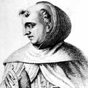

Albertus Magnus (1200-1280) ünlü bir Orta Çağ teoloğu ve felsefecisidir. Daha sonra Roma Katolik Kilisesi’ne yaptığı katkılar nedeniyle aziz ilan edilecektir. Bilimsel saygınlığı ise adı tarihinin en büyük şarlatanlıklarından birine karıştığı için zarar görmüştür. Ne yazık ki ömrünün önemli bir bölümünü, maddeleri altına dönüştürdüğüne inanılan felsefe taşının arayışı içerisinde geçirmiştir.

Efsaneye göre Albertus, ömrünün sonlarına doğru felsefe taşının sırrını keşfetmiş ve bunu ölüm döşeğinde hamisi Aquinalı Thomas’a (1225-1274) söylemişti. Gerçekte böyle bir olay hiç gerçekleşmemiştir. Çünkü Thomas, Albertus’tan önce ölmüştür. Ne var ki bu gerçeğin üstü, Albertus’un ünü ile örtülmüştür.
Gerçekte Albertus çağının en devrimci düşünürlerinden biriydi. Aklın ve dinin uzlaşabileceğini savunması, modern bilimin gelişimine katkı sağladı. Çağdaşı Roger Bacon (1214-1292) gibi bilimsel araştırmayı savundu. Botanik, fizyoloji, astronomi, coğrafya ve kimya alanlarında çalışmalar yaptı. Şöyle yazıyordu: “Doğa bilimlerinin amacı, başkalarının tezlerini tekrarlamak değildir. Yapılması gereken, doğal olayların nedenlerini araştırmaktır.”
Albertus Almanya’da doğmuş ve İtalya’daki Padova Üniversitesi’nde eğitim görmüştü. 1223 yılında Dominiken tarikatine katıldı. Almanya’da pek çok okulda ders verdi. Daha sonra Paris Üniversitesi’ne gitti. Burada genç Thomas’ın da içinde bulunduğu pek çok öğrencisi olacaktı. Albertus derslerinde, Aristo (MÖ 384-322) gibi Yunan düşünürlerini öğrencilerine tanıttı.
Albertus kilise politikasının da önemli bir unsuruydu. Bavaria’daki bir şehir olan Regensburg’ta üç yıl boyunca piskoposluk yapmıştı. Başarısız olan 1270 yılındaki 8. Haçlı Seferi’nin organize edilmesine yardım etti. Avrupa’nın en büyük düşünürlerinden biri olarak kabul edildi. 1280 yılında Köln’de öldü.
Ek Bilgiler
1- Latince “magnus” büyük anlamına gelmektedir. Bu unvan Albertus’a teolojik bilgisi nedeniyle verilmiştir. İngilizce “Albert The Great” olarak da anılmaktadır.
2- Felsefe taşını yaratamasa da Albertus arseniği keşfetmiştir. 1250 yılında zehirli metali izole etmeyi başarmıştır.
3- Albertus Papa 11. Pius (1857-1939) tarafından 1931 yılında aziz ilan edilmiştir. Öğrencilerin, bilim adamlarının ve Ohio’daki Cincinnati şehrinin koruyucu azizidir.